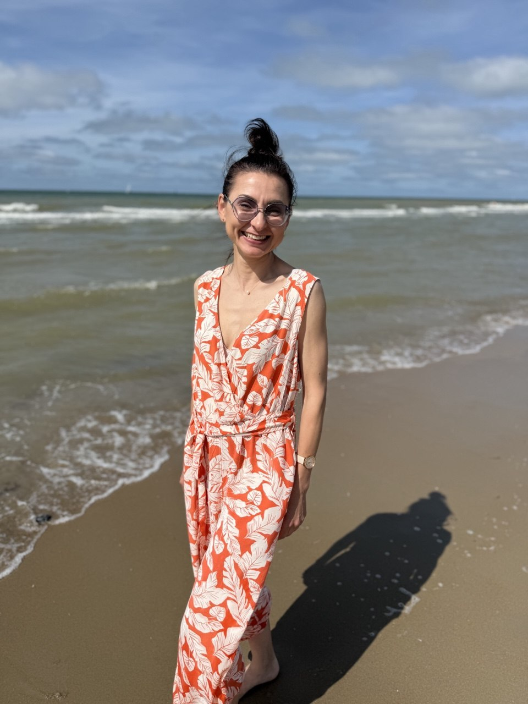
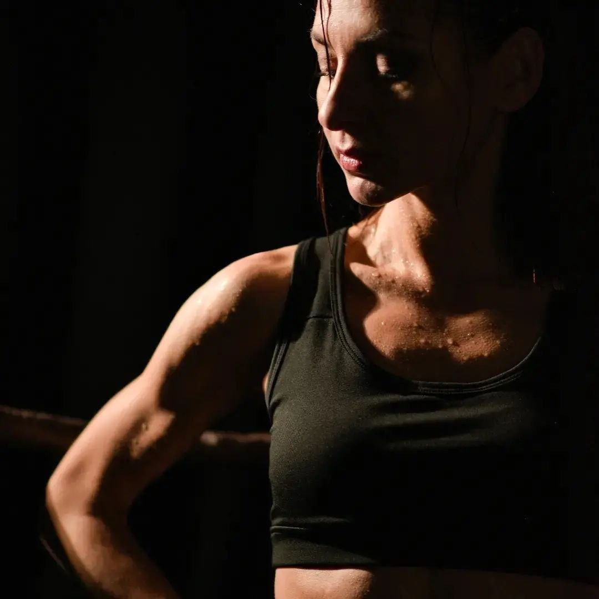

Никакого насилия над телом. Уберём выпирающий живот через правильное дыхание, осанку и работу с внутренним давлением — живот подтянется сам.
Будим поперечную мышцу — ваш «внутренний корсет». Без сотен скручиваний и изнурительных тренировок.
Правильное дыхание, осанка и работа с внутренним давлением — живот подтягивается сам.
Забудьте про вздутие, тяжесть и вечное чувство «надутого шарика».
Спина перестанет ныть, а плечи расправятся.
Онлайн, 14 дней. Занимаетесь в любое время — всего 10–15 минут в день.
Скручивания и подъёмы ног при диастазе (расхождении мышц живота) запрещены — они только сильнее растягивают белую линию. А о диастазе многие даже не знают. Поэтому на старте делаем тест на диастаз.
Учимся управлять давлением внутри живота, чтобы оно не «давило» вперёд, а помогало мышцам собраться.
Поперечная мышца обхватывает талию по кругу. Её не нужно качать — её нужно разбудить.
И это не только про живот: дыхание — это ещё и мышцы тазового дна, спокойствие при стрессе и сон.


«Много лет я преподавала классический пилатес, пока не совершила главное открытие: настоящий плоский живот начинается не со скручиваний, а с умного дыхания. Мой переход к осознанному фитнесу помогает женщинам обрести тонкую талию и здоровую спину без борьбы со своим телом».
«Мой результат: талия −3 см, под грудью −2 см, вес −1,3 кг. Ещё работать и работать».
Светлана, второй поток подряд«Я узнала, что у меня диастаз и что все эти годы пресс мне качать нельзя. В привычку вошло переключаться и дышать животом!»
Участница проекта«Это очень организовывает, самостоятельно сложно себя заставить из-за постоянной занятости. Главное, что посильно и доступно! И это реально работает!»
Елена«Для меня действительно открытие, что такие простые упражнения могут так хорошо напрягать мышцы. Практически все упражнения были не знакомы мне».
Катерина«Пришла с проблемой выпирающего живота, беспокоили отёки. Заметила, что отёчность лица да и всего тела уменьшилась. Энергии стало больше, появилось ощущение лёгкости».
Ирина«Я вообще ленивый человек по отношению к спорту, но у вас так всё ненавязчиво и постепенно, что мне хочется всё это делать. Появилась лёгкость».
Участница проектаОтзывы из чата проекта. Результаты у всех индивидуальны.
Откроется Telegram-бот. Напишите, как вас зовут, — это минута.
Бот пришлёт реквизиты. Отправьте ему скрин или чек оплаты.
После подтверждения бот пришлёт ссылку в закрытый канал и чат. 1 ноября — старт!
при записи до 31 октября · с 1 ноября — 70 BYN
Всего 20 мест — чтобы ответить каждой лично
Кнопка откроет Telegram: заявка → реквизиты → доступ в канал марафона
Нет, никакой инвентарь не нужен — занимаетесь дома.
10–15 минут. Занимаетесь в любое удобное время.
Да. Здесь важен не вес. Живот может выпирать и при небольшом весе, когда глубокие мышцы «спят».
Да, начинаем с основ и разбираем технику пошагово.
Всё: видео упражнений и материалы остаются в чате навсегда, можно возвращаться к ним в любое время.
Ничего страшного: все видео и задания остаются в чате навсегда — догоните в удобное время.
Да, если остались места. С 1 ноября участие стоит 70 BYN, все материалы предыдущих дней будут в чате.
Переводом на карту — реквизиты пришлёт бот после заявки. Отправьте ему чек, и после подтверждения вы получите ссылку в канал марафона.
Да, но только после разрешения вашего врача.
Онлайн, в закрытом Telegram-канале марафона и чате участниц.
Присоединяйтесь к марафону и почувствуйте, как живот откликается на дыхание.
Хочу на марафонМарафон не заменяет консультацию врача. При хронических заболеваниях, беременности и после операций занимайтесь только с разрешения специалиста.